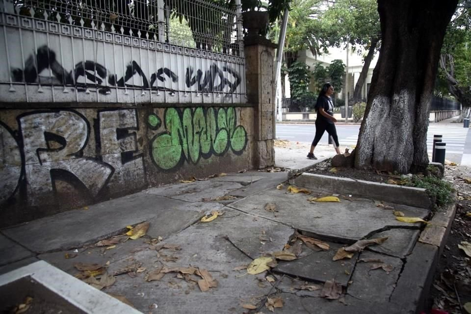

Caminar en CDMX es habitar la inestabilidad cotidiana como parte del trayecto.
Cartografía sensorial del peatón

Caminar por la Ciudad de México es mucho más que desplazarse: es atravesar una red de sensaciones que moldean la experiencia cotidiana del peatón. Una cartografía sensorial busca registrar no solo los trayectos visibles en el mapa, sino también los sonidos, aromas, texturas, temperaturas y emociones que acompañan cada paso.
El rugido constante de los motores en avenidas principales contrasta con el murmullo de los mercados y el repique de las campanas de barrio. El aroma a gasolina se entremezcla con el de los tamales al amanecer, las jacarandas en flor o el asfalto mojado después de la lluvia. Los ritmos del tránsito, las luces de los semáforos, el tacto desigual de banquetas y empedrados, incluso la ansiedad o la calma que generan ciertos cruces, forman parte de esta geografía invisible.
Esta mirada propone entender la ciudad desde el cuerpo y los sentidos: no solo como un espacio físico, sino como una experiencia viva que se transforma con cada recorrido. La cartografía sensorial abre la posibilidad de imaginar políticas urbanas más humanas, capaces de escuchar lo que el peatón siente en sus recorridos diarios.
Translados y tiempos a pie
Caminar en la Ciudad de México es enfrentar un pulso propio del tiempo urbano. Aunque las distancias pueden parecer cortas en el mapa, los traslados a pie se transforman por la densidad del tránsito, la falta de continuidad en las banquetas o la necesidad de sortear obstáculos. Un trayecto de diez minutos puede convertirse en veinte cuando las calles están saturadas, cuando se espera el cambio del semáforo o cuando la multitud marca el ritmo del avance.
Sin embargo, el caminar también ofrece un tiempo distinto al del automóvil o el transporte público. El peatón experimenta pausas, desvíos y encuentros que no aparecen en otros modos de traslado. El tiempo a pie es el tiempo de la percepción: detenerse a mirar un puesto, esquivar una raíz que rompe la acera, o simplemente adaptarse al flujo cambiante de la ciudad.
Observar los tiempos de traslado peatonal permite descubrir una geografía micro de la ciudad: la duración real de los trayectos, los puntos de congestión humana, los espacios que invitan a acelerar el paso o a detenerse. Más allá de la velocidad, caminar revela otra medida de la vida urbana.
Espacios seguros
La experiencia de caminar por la Ciudad de México no depende solo de la distancia o el tiempo: está profundamente marcada por la percepción de seguridad en cada tramo. Un trayecto puede ser más largo o más corto en función de si el peatón se siente protegido en su andar. Calles iluminadas, banquetas amplias y con flujo constante de personas generan confianza; en cambio, pasos oscuros, cruces vehiculares agresivos o tramos aislados obligan a modificar rutas, incluso si eso significa sumar minutos al traslado.
Los espacios seguros no se limitan a la ausencia de riesgo físico, también implican accesibilidad y cuidado. Zonas donde hay comercio local, parques con vigilancia o presencia comunitaria suelen invitar a caminar con calma. En contraste, los lugares donde la infraestructura peatonal es precaria o donde el tráfico impone su ley provocan ansiedad y aceleran el paso.
Pensar los traslados peatonales desde la seguridad es clave para entender cómo se vive la ciudad: el peatón no elige solo el camino más corto, sino el que equilibra tiempo, confianza y protección. Una cartografía sensible a estos factores puede visibilizar los recorridos cotidianos que hoy permanecen ocultos en los mapas oficiales.